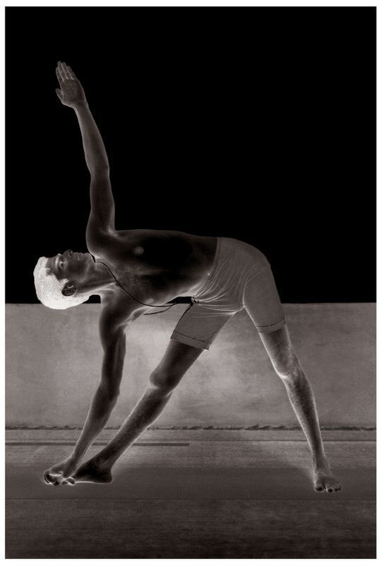

Utthita Trikonasana has five vinyasas, of which the 2nd and 4th are the states of the asana. Rechaka and puraka should be performed as above and, as with the Surya Namaskara, rechaka occurs in the even-numbered vinyasas and puraka in the odd. Aspirants should note the correct movements of both, and perform them properly.
METHOD
First, beginning with puraka, jump the legs open to the right, three feet apart, stretch the arms out wide on either side of the torso at chest level, and hold; this is the 1st vinyasa. Then, turn the right foot to the right and exhaling, reach down and take hold of the big toe of the right foot with the right hand, lift up the other arm, fix the gaze on its fingertips, and do puraka and rechaka slowly and as much as possible; this is the 2nd vinyasa; for this vinyasa, both knees must be kept straight (see figure.) Then, doing puraka, return to the position of the 1st vinyasa, and hold; this is the 3rd vinyasa. Then, turn the left foot to the left, and doing rechaka, reach down and take hold of the big toe, gaze at the tip of the raised hand, and do puraka and rechaka as much as possible; this is the 4th vinyasa. Then, doing puraka, return to the position of the 1st vinyasa; this is the 5th vinyasa. Then, return to Samasthiti.
UTTHITA TRIKONASANA

BENEFITS
Utthita Trikonasana dissolves the bad fat at the waist, and brings the body into shape. It also expands the narrow portion of the breathing channel and strengthens the backbone.